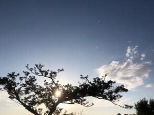
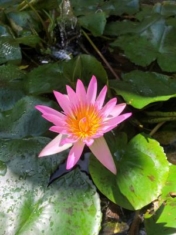
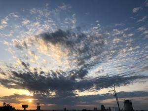

うるがいの話 ある日
最新: シーミー（清明祭）【うるがいの話 ある日】とは 一日だけのプログです
『うるがいの話』の最新一日だけのプログで、通信料が少なく経済的だ。カニの画像をクリックすると全ての日付が載る『うるがいの話』サイトを表示します
|
|
【うるがいの話】 うるがい(ｳﾙｶﾞｲ urugai)とは、『もずくがに』の名前でとても大きくなります。 |
|---|---|
|
|
【カミマヤーの話】 猫のことを方言でマヤーといいます。カミマヤー（kamimayaa）とは、神の猫のことです。 |
|
【たながぁの音楽】 たながぁ（ﾀﾅｶﾞｰtanagaa）とは手長えびのことで、何種類かあり大きいのは車 エビぐらいになります。 |

|
【ぶながぁの話】 ぶながー(bunagaa)とは、赤い髪の毛、赤い身体、そして身長は１ｍ２０ｃｍ ぐらい、川の蟹を食べているの目撃された。場所は沖縄県国頭郡大宜味村のと ある村僕の隣近所に住んでいる爺さんから、聞いた話です。 |
|
|
【ギーマの話】 ギーマ(giima)とは、山原の里山に咲くスズランに似た、 花を付けます。実は食べられます、 気が付くと口の周りが紫になっています。 |
2022年04月25日 (月）シーミー（清明祭）
15:09
 
我が家は、シーミーのしきたりは無いが、ヨメ方のシーミーを寺で行った。コ
ロナ禍になり２年間はパスしていた。ヨメのお母さんは入院しているので二人
だけで、納骨している寺への年間費を支払いながらである。納骨堂の建物の三
階にあり、部屋には暗証番号を打ち込んで入る。入口に『供え物は持って帰ら
ないように』とあった。ホホ、いるんだそういう人が・・・、中に入ると我々
だけであった。供え物は、いたるところに放置されている、持って帰らないの
か、と思ったが。それにしても、暑い、夏ジャン。寺から帰り、重たくなった
ホームページを軽くした、去年の１０月２７日の前回から月日が経っているの
で手順を思い出すのに時間がかかった、ンー、プログラムをくむか。

１５時０４分 ビットコインの総資産 ￥１４、５２２↓